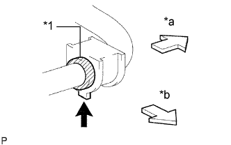

ПЕРЕДНИЙ СТАБИЛИЗАТОР ПОПЕРЕЧНОЙ УСТОЙЧИВОСТИ (для моделей без KDSS) > УСТАНОВКА |
| 1. УСТАНОВИТЕ ЛЕВУЮ ВТУЛКУ ПЕРЕДНЕГО |
| 2. УСТАНОВИТЕ ВТУЛКУ ПЕРЕДНЕГО СТАБИЛИЗАТОРА № 1 |
|  |
Установите 2 втулки переднего стабилизатора № 1.
| *1 | Упор втулки |
| *a | Наружная сторона |
| *b | Передняя сторона |
 | Выступы |
| 3. УСТАНОВИТЕ ЛЕВЫЙ КРОНШТЕЙН ПЕРЕДНЕГО СТАБИЛИЗАТОРА № 1 |
Закрепите левый кронштейн переднего стабилизатора № 1 с помощью 2 болтов.
| 4. УСТАНОВИТЕ ПРАВЫЙ КРОНШТЕЙН ПЕРЕДНЕГО СТАБИЛИЗАТОРА № 1 |
| 5. УСТАНОВИТЕ ЛЕВУЮ СТОЙКУ ПЕРЕДНЕГО СТАБИЛИЗАТОРА В СБОРЕ |
Установите левую стойку переднего стабилизатора в сборе и закрепите ее 2 гайками.
| 6. УСТАНОВИТЕ ПРАВУЮ СТОЙКУ ПЕРЕДНЕГО СТАБИЛИЗАТОРА В СБОРЕ |
| 7. УСТАНОВИТЕ СКОБУ ЭЛЕМЕНТА ПЕРЕДНЕЙ ПОДВЕСКИ В СБОРЕ |
Установите 2 скобы элемента подвески и закрепите их 6 болтами.
| 8. УСТАНОВИТЕ ЗАЩИТУ КАРТЕРА ДВИГАТЕЛЯ № 1 В СБОРЕ |
 |
Присоедините защиту картера двигателя к кузову автомобиля, как показано на рисунке.
Вверните 4 болта.
| 9. УСТАНОВИТЕ НИЖНЮЮ НАКЛАДКУ ПЕРЕДНЕГО БАМПЕРА |
Установите нижнюю облицовку переднего бампера и закрепите ее 5 болтами и фиксатором.
| 10. УСТАНОВИТЕ ПЕРЕДНЕЕ КОЛЕСО |